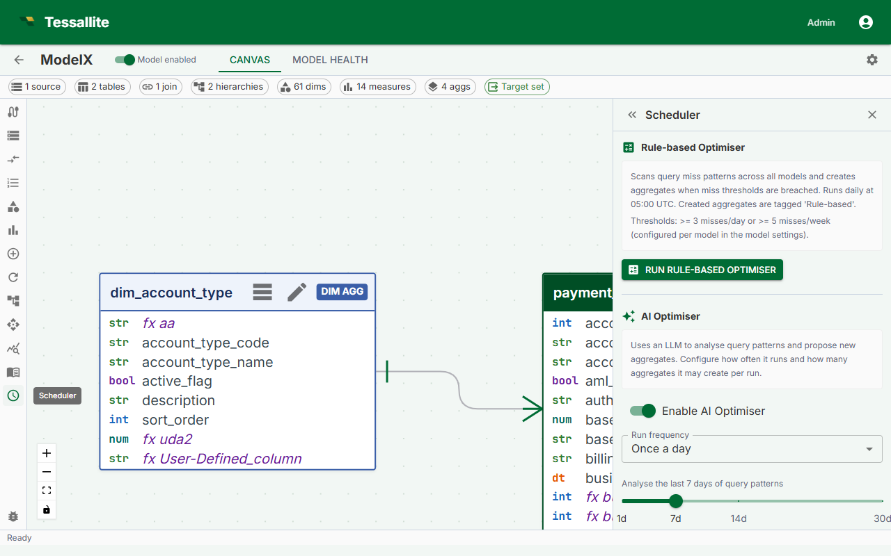

Manage Aggregate Schedules

What this covers
Aggregate schedules control when the Scheduler service refreshes each aggregate. This article explains the two places where schedules are managed, how to write and use cron expressions, how to pause a schedule, and what the Stale status means.
Two places to manage schedules
Option 1: Canvas → Drawer
- In Model Builder, locate the aggregate in the Canvas.
- Click the aggregate to select it.
- In the Drawer, find the Refresh Schedule field.
- Enter a cron expression or select a preset.
- Click Save. The new schedule takes effect at the next scheduled run time.
Option 2: Scheduler panel
- From the workspace sidebar, click Scheduler.
- The Scheduler panel opens, showing all aggregates across all models in the workspace.
- Locate the aggregate by model or aggregate name, then click its schedule field to edit it inline.
- Click Save.
Scheduler panel columns
| Column | Description |
|---|---|
| Model | The model this aggregate belongs to. |
| Aggregate name | The name assigned to the aggregate in Model Builder. |
| Last refreshed | Timestamp of the most recent completed refresh run. |
| Next scheduled | When the Scheduler will next attempt a refresh. |
| Status | Ready, Building, Stale, or Paused. |
| Actions | Run now, Pause / Resume, Edit schedule. |
Cron expression reference
Tessallite uses standard five-field cron syntax: minute hour day-of-month month day-of-week.
| Preset | Cron expression | Meaning |
|---|---|---|
| Hourly | 0 * * * * | Runs at the top of every hour. |
| Daily at 02:00 | 0 2 * * * | Runs once per day at 2:00 AM. |
| Weekly on Sunday 03:00 | 0 3 * * 0 | Runs once per week, Sunday at 3:00 AM. |
| Every 15 minutes | */15 * * * * | Runs at :00, :15, :30, and :45 past every hour. |
All times are evaluated in UTC unless the server's SCHEDULER_TZ environment variable is set to an IANA timezone identifier.
Pausing a schedule
In the Scheduler panel, click the Active toggle to switch it off. The aggregate retains its data and continues to serve queries, but the Scheduler will not attempt any further refreshes until the toggle is switched back on. A paused aggregate displays status Paused in the panel.
Running a refresh immediately
In the Scheduler panel, click Run now in the Actions column. The aggregate's status changes to Building for the duration of the run. This does not affect the regular schedule.
Viewing refresh history
- In the Scheduler panel, click the aggregate name.
- A history drawer opens showing the last 10 refresh runs.
- Each entry shows start time, duration, and outcome (Success or Failed).
- For failed runs, click View log to see the full Scheduler log for that run.
Stale status
An aggregate is marked Stale when its last successful refresh completed more than twice the schedule interval ago. Stale aggregates continue to serve queries using their existing data, but the data may be older than expected.